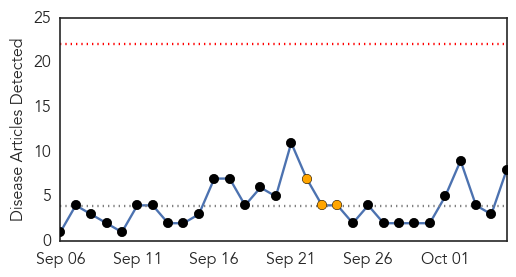
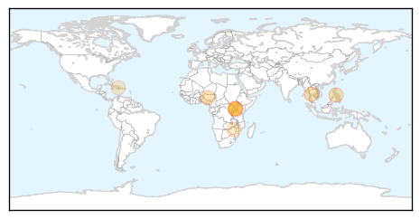
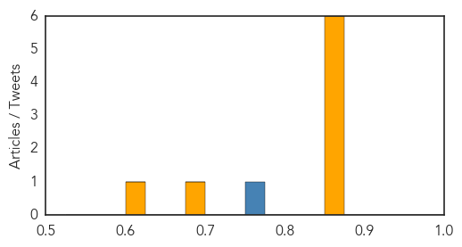
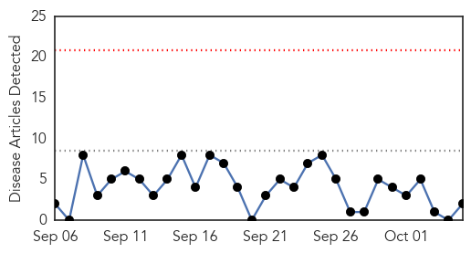
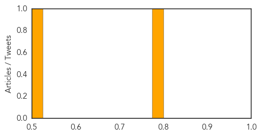

Cholera
30-Day Web Trend
0 alerts, 3 warnings

30-Day Twitter Trend
1 alerts, 0 warnings

Article Locations
Article Confidences
Top Articles:
- 0.863
- KCCA Should Pay Taxi Stage Operators – Museveni
- 0.863
- Grain Sector Players Commit to Structured Grain Trade
- 0.863
- EXCLUSIVE: Judge Orders NSSF To Pay Shs 11bn to UTL
- 0.863
- Etihad Airways Named Best Airline – Business Class
- 0.863
- Amin’s Son: Why My Father Expelled Asians from Uganda
- 0.863
- Africa Tourism Set for Sustained Growth
- 0.678
- Zim to receive $16 million water & sanitation relief
- 0.623
- Haiti: Urgent request for humanitarian funding
Top Tweets:
- 0.771
- RT: "There is considerable optimism about the control of Cholera." Revitalizing Cholera Control Efforts. @WHO WER http://t.c…
West Nile Virus
30-Day Web Trend
0 alerts, 0 warnings

30-Day Twitter Trend
0 alerts, 0 warnings

Article Locations

Article Confidences
Top Articles:
Top Tweets:
-
No tweets found for Oct 05, 2015